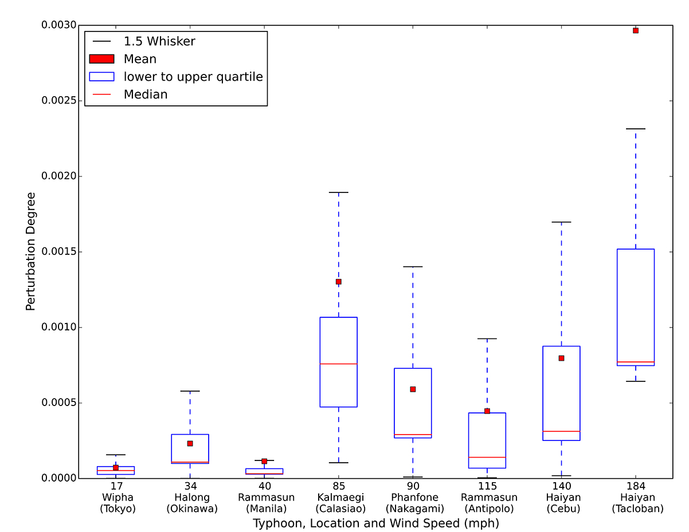

Perturbation
The change in the distributions of displacements.

"We calculated the probability distribution for both the Impact Day (Dp) and a Normal Day (Ds), and let dE = [dE (1), dE (2),…, dE (dmax)] be Euclidean distance between the two distributions."
Yan 2017 states: "displacements of different trip distances... were perturbed significantly" so we might assume Wang 2014 is using the sum of displacement distance within each of the 6 trip distance segments. Yan 2017 also states that Radius of Gyration values were perturbed significantly.
Comparing Distributions
Comparing two Probability Density Functions (PDFs) using Kullback-Leibler divergence
https://stats.stackexchange.com/questions/245526/comparing-two-pdfs-using-kullback-leibler-divergence
Difference between two signals
https://dsp.stackexchange.com/questions/14306/percentage-difference-between-two-signals
Display the difference between two lines
https://stackoverflow.com/questions/49487952/how-to-plot-the-difference-of-two-distributions-in-a-seaborn
Calculating KL Divergence in Python (single value)
https://datascience.stackexchange.com/questions/9262/calculating-kl-divergence-in-python
Mathworks matches the original 2014 chart style
https://blogs.mathworks.com/pick/2010/06/11/distribution-plot/
Includes 3-Day segment chart
https://www.mathworks.com/help/stats/boxplot.html
View Charts